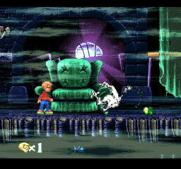

The Pagemaster

The Pagemaster was developed by Probe Software Ltd. and published by Fox Interactive. This game was released in 1994 for the Sega Genesis, the Windows 3.x, the Game Boy, and the SNES. The playable character platforms through literature genre-themed stages, including levels based on horror and fantasy. The SNES release, our focus here, received mixed reviews; GamePro gave it a 6.5/10 average score. In my opinion, the game's primary flaws are its uncomfortable controls and its repetitive nature - it seems uninterested in offering diversity in its gameplay. That being said, the visuals are really quite nice for the time from a third party company, albeit, they are not groundbreaking in any way.